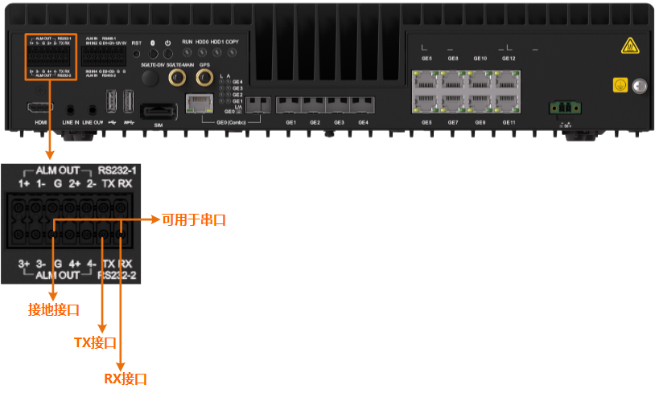

操作系统登录时，需要先以admin用户登录，然后才能切换到root/ivsoper用户；不能直接以root/ivsoper用户登录。

设备侧连接位置如图1所示。
本示例仅讲解串口线连接ITS800时的接线要求，串口线用于连接PC端的接口请根据实际使用。
实际使用的端口可在路径下查看；波特率输入“115200”。
Authorized users only. All activities may be monitored and reported. Euler login: admin Password: Last login: Wed Feb 26 15:58:10 from 192.168.1.100 Authorized users only. All activities may be monitored and reported. Euler:~ #
su - root
切换过程中需要输入root用户的密码。
如何修改密码，请参见修改密码（命令行方式）。